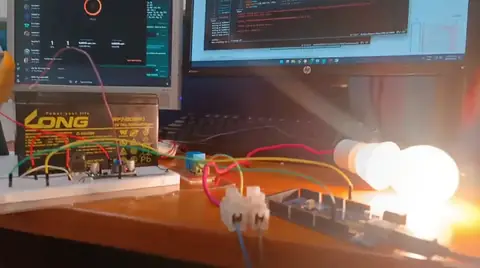
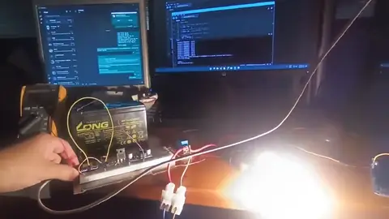

Summer School IoT Demonstration
A smart switch demonstration used to teach IoT to children at LUMS Summer School.
Motivation
A live demonstration makes the link between software and physical devices easier to explain to students learning IoT.
Work completed
- Built and demonstrated a smart switch during the summer between my freshman and sophomore years.
- Used a working lamp control setup to explain connected devices and IoT to children.
Outputs
- Provided a physical demonstration for the summer school teaching sessions.
Photos and videos
Gallery
Summer School IoT
Summer School IoT